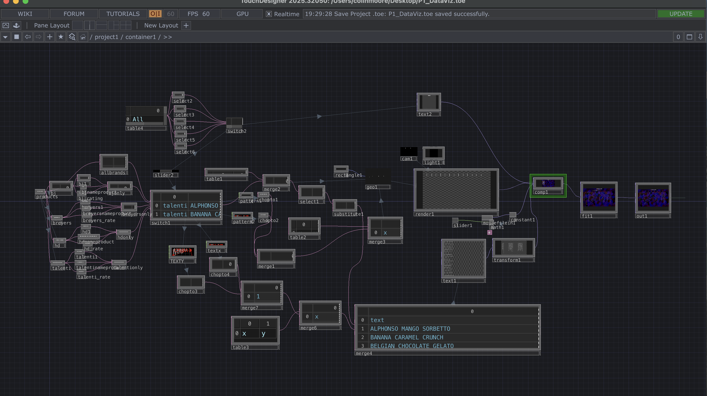
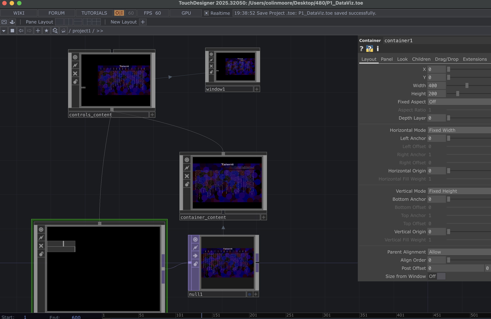

Ice Cream Flavor Ratings Visualization
Summary
This visualization explores ratings of different ice cream flavors across multiple brands. Users interact with the visualization using two sliders. One slider changes which brand’s data is displayed, allowing comparisons between Ben & Jerry’s, Häagen-Dazs, Breyers, Talenti, or all brands. The second slider controls the color scheme, shifting between purple and blue tones to evoke a cool, frozen feeling associated with ice cream.
Process & Results
TouchDesigner Network

Shows how all the interactions are connected together inside the container
Process of Creating this Exercise
-
Inside the container I started by importing the dataset. I then created 13 Select DATs from the table: one containing all the brands, the name of the ice cream flavor, and the rating. The rest were designed for each brand. The first brand was Ben & Jerry’s. I used three Select DATs for this: one for the name where I used the expression re.match('bj$',me.inputCell.val) != None to get all ice creams with the Ben & Jerry’s brand. The other two Select DATs were for rating and flavor name, and I merged all three together. I repeated this process with Häagen-Dazs, Breyers, and Talenti.
-
After creating the merge for each brand, I took all of those merges and the select containing all brands, flavor names, and ratings and connected them to a Switch DAT. So far all these were DAT operators.
-
This switch DAT references a slider to control what dataset is being displayed. I started with the getting bars to display. With the switch1 DAT, I used two CHOP pattern: a constant (y) and a ramp (x). I used the expression op('switch1').numRows for both of their lengths. I then converted both those patterns to a DAT with a Chop To DAT and merged them together. I took another table that just has one row with two columns label x and y and merged that with the merged that has the values and then had the geo COMP reference this merge as the Translate op and used translate x and y respectively. The switch also merged with another table that has three columns and one row labeled brand, name , rating then have the geo scale op reference this merge and used the rating as the scale y value. The Geo COMP was connected to a Rectangle POP. The Geo COMP is reference by a TOP render that needs to have a camera and light COMP.
-
After the bars were being displayed based on slider I needed to display the text of the name of ice cream flavors. I did the same thing with the switch and using two CHOP patterns to reference that with the ramp being the y and constant being the x then I did a chopto to turn them both into DAT then merged them again and merged them again with table that just has one row with two columns label x and y. I then merged the table with a substitute DAT that came from a select DAT that selects the name from the merge of the switch and the three columns brand, name and rating. I then had a text TOP use the specData and reference this merge then I transform it by -90 degrees so they could be displayed below the bar graph.
-
I have another slider to control color I add a math CHOP to change range from 0-1 to 0-0.5 cause I didn't want color to be shown not have it disappeared to black. I connected this to constant color so I used the slider to switch from blue to purple cool/cold color emotion i was going for. I also created a background with circles and colors that look like ice cream and connected this to the constant TOP.
-
Then, I created a table with two columns and five rows. One column contains the brand names (All, Ben & Jerry’s, Häagen-Dazs, Breyers, Talenti) and the second column stores the font style. I then had five selects coming off that table that selects the text and font I then connected them all in a switch and gave the slider that references the other switch references this one too to display the text based on whats showing. This switch is then reference to a Text where the text references what text to display by op('switch2')[0,0] and the font type by op('switch2')[0,1] expression.
-
Lastly, I combined the rendered geometry, the constant background, and the transformed text containing the product names using a Composite TOP with the Over operation so the background appears behind the bars and text. Then I connected this to a fit TOP and the fit TOP to and out TOP and then in the upper layer of the project I connected container just like I did in post 2.
Process & Results
TouchDesigner Network

Shows how the containers connect to the window where the visualization runs.
Interactive Demonstration
Watch the interactive Final Project demo on YouTube →References
- Derivative Community Forum. “Rotate Text 90 Degrees.” Used for rotating text in the visualization. View Source
- Python Software Foundation. “re — Regular Expression Operations.” Used for selecting specific text values from the dataset. View Source
- Tysonpo. “Ice Cream Dataset.” Dataset used for the visualization. View Source